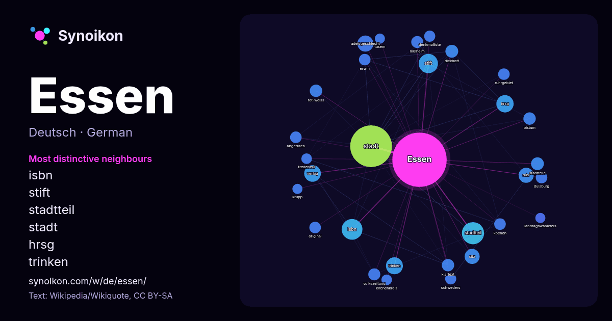

Deutsch · beliebtes Wort
Essen
“food” · Die Wörter in seinem Umfeld aus 1334 Vorkommen in Wikipedia, Wikiquote.

Typischste Nachbarn
- isbn 41×
- stift 32×
- stadtteil 32×
- stadt 32×
- hrsg 30×
- trinken 28×
- adelsgeschlecht 24×
- ruhr 22×
- verlag 20×
- dickhoff 17×
- klartext 16×
- rot-weiss 16×
- stadtteile 16×
- volkszeitung 15×
- mülheim 14×
- koenen 14×
- abgerufen 14×
- ruhrgebiet 13×
- schweders 13×
- erwin 13×
× = wie viel häufiger als in allgemeinem Wikipedia-Text.
Häufigste Nachbarn
- stadt 170
- stadtteil 48
- isbn 42
- stift 36
- hrsg 29
- trinken 28
- verlag 27
- adelsgeschlecht 25
- deutscher 24
- geschichte 22
- ruhr 22
- sitz 22
- liste 17
- deutsches 16
- dickhoff 16
- stadtteile 16
- bistum 15
- klartext 15
- rot-weiss 15
- august 14
Im Kontext
- Deutschlands. Essen ist als bedeutender Industrie- und Wirtschaftsstandort Sitz bekannter Großunternehmen und mit der Universität Duisburg-Essen auch Hochschulstandort Wikipedia snippets · Essen
- Essen steht für: Essen, Nahrungsaufnahme oder Mahlzeit, siehe Ernährung des Menschen Essen als Kollektivum für (feste) Nahrung Essen, zubereitete Speise Wikipedia snippets · Essen (Begriffsklärung)
- Bad Essen (bis 1902 Essen) ist eine Gemeinde im Osten des Landkreises Osnabrück in Niedersachsen. Bad Essen liegt mit seinem historischen Ortskern an Wikipedia snippets · Bad Essen
- Set, Funkzellen eines WLANs Essen (DE ESS nach UN/LOCODE) Essex, englische Grafschaft, Chapman-Code Verkehrslandeplatz Essen/Mülheim nach dem Drei-Letter-Code Wikipedia snippets · Ess
- Essen (Oldb) ist eine Gemeinde im Landkreis Cloppenburg in Niedersachsen und liegt im Oldenburger Münsterland. Essen gehört zur geografischen Landschaft Wikipedia snippets · Essen (Oldenburg)
- Rot-Weiss Essen ist ein Fußballverein aus Essen. Er wurde am 1. Februar 1907 als SV Vogelheim gegründet. Nach mehreren Zusammenschlüssen mit anderen Vereinen Wikipedia snippets · Rot-Weiss Essen
- Der Turn- und Sportverein Essen-Margarethenhöhe e. V. 1926, kurz TUSEM Essen oder TuSEM Essen, ist ein deutscher Sportverein, der vor allem durch die Wikipedia snippets · TUSEM Essen
- in Essen geweiht. Papst Johannes Paul II. besuchte 1987 das Bistum Essen, u. a. die Städte Essen, Bottrop, Gelsenkirchen und Mülheim. Der Essener Priester Wikipedia snippets · Bistum Essen
Weitere Wörter
- Arbeit
- Brücke
- Familie
- Geld
- Geschichte
- Gesundheit
- Gold
- Gott
- Kunst
- Leben
- Macht
- Natur
- Tod
- Wahrheit
- Wasser
- Wissenschaft
- Zug
Vorberechnet am 2026-10-09 mit Standardeinstellungen (±5 Wörter, mittlerer Korpus). Die interaktive Karte kann mit Live-Daten aktualisieren.
Maschinell übersetzte Oberfläche; Korrekturen willkommen.